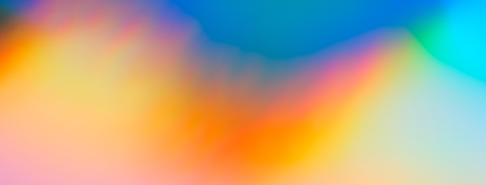

Our programs
Providing free and open-sourced research mentorship
to bridge the gap in science engagement
2023 Offerings

Summer Research Programs
Future Offerings
We are currently working on expanding the summer research mentorship programs to support other areas of STEM in the near future.
Ecology, Earth, and Environmental Science
In the works for 2024.
Computer Science
In the works for 2025.
FAQ
| Question | Answer |
|---|---|
| Are the programs fully virtual? | Yes, all programs are virtual, and an asynchronous learning path is available for those who are juggling multiple things for the summer (camps, jobs, etc.). |
| Are there any fees for the program? | No. The program is absolutely free. |
| Who can apply? | Anyone who is a current high school student (grades 9 through 12) or older can apply. We also encourage non-traditional students, like those who did not attend college, are serving in the military, or wish to re-enter the educational system, to apply. International students are welcome. |
| How do I apply to be a student? | Each program has a separate application. You can find all application links in the Apply tab. |
| How are students selected? | In the case that we don't have enough mentors to support student interest, we will prioritize students who are from underserved communities, underrepresented in science, and/or older students who have never pursued scientific research in the past. We will provide all applicants with no mentor match the opportunity to learn asynchronously with us. |
Our Teaching Model

We bridge the opportunity gap in
scientific research.
Traditional research training has relied on in-person labwork mentored by staff in the research laboratory, limiting the number of students that can be trained in basic scientific research skills.
We enable more students to have access to research training by:
- relying on open-science models of freely available scientific literature, textbooks, encyclopedias, and datasets;
- setting no required qualifications from basic research skills, and
- crowdsourcing mentors with experience in science.
Curriculum
We recognize that many students are in need of a more flexible scientific curriculum.
We pair students with mentors who will individually advise them on a flexible schedule (akin to private tutors) and provide resources to pursue project-based learning in scientific research. For budding scientists, this involves familiarizing themselves with science. For well-rooted scientists, this involves pursuing an independent research project using open-source materials.
Staff
We are powered by a volunteer force that is dedicated to furthering diversity in science.
As the students gain valuable scientific experiences, staff gain experience in leading a scientific project as a small-scale primary investigator and a scientific mentor. In the cases where students submit their summer projects to a student journal, these mentors serve as primary investigators for these papers. We employ diverse mentors with keenness to their passion for fostering diversity. We support volunteers and students alike in their professional development, which enables our program to flourish.
Resources
With the open science movement, science can be done anywhere and at any time.
Unlike the traditional scientific research model, where subscription-based journals and expensive tools barred entry to science, laypeople are now freely able to engage in scientific research. We leverage this fact and use these tools for education.Organization
We are a collection of volunteers who are impassioned to bring science research to the people. We, as an organization, are a 501(c)3 charitable organization incorporated in the state of California. In the coming future, we aim to to grow the program across more disciplines and serve more individuals across the world.